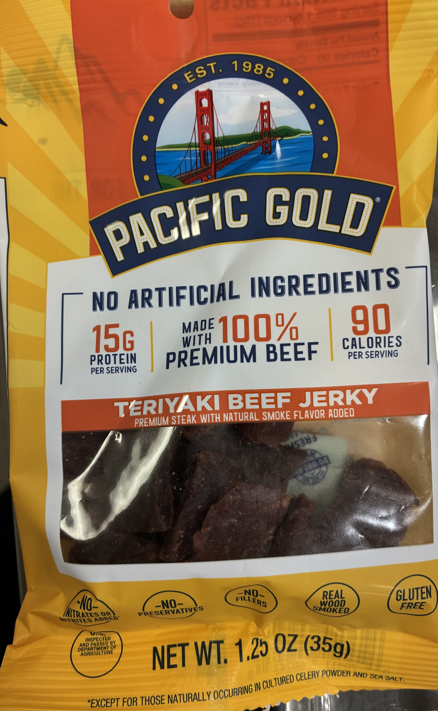
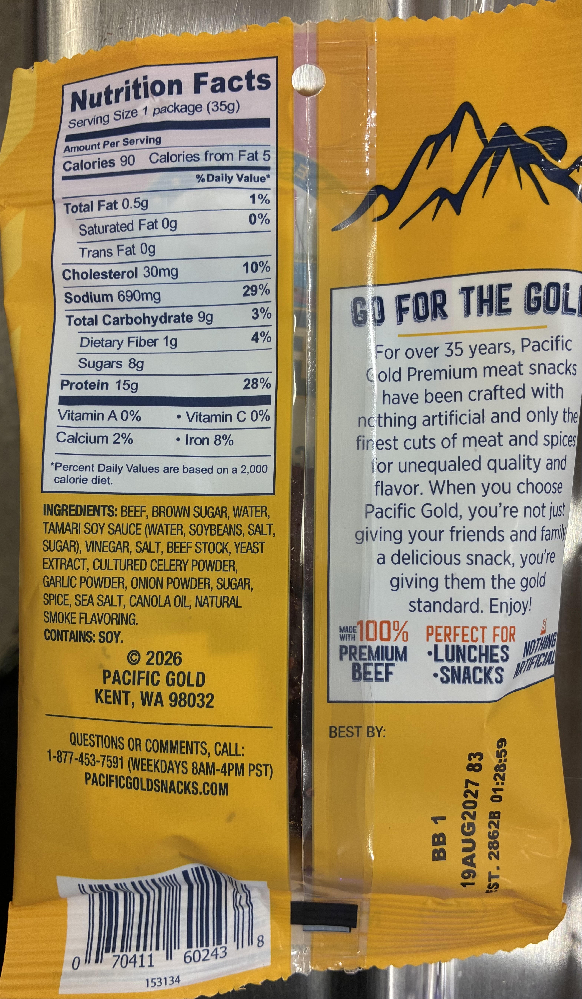

Home
Teriyaki Beef Jerky
Fruit by the Foot
Tim's Jalapeno Chips
Doritos
Muffins
Yogurt
Teriyaki Beef Jerky


Nutrition Facts Per Serving
Serving Size
1 package (35g)
Calories
90
Total Fat
0.5g (1%)
Saturated Fat
0g (0%)
Trans Fat
0g
Cholesterol
30mg (10%)
Sodium
690mg (29%)
Total Carbohydrate
9g (3%)
Dietary Fiber
1g (4%)
Sugars
8g
Protein
15g (28%)
Vitamin A
0%
Vitamin C
0%
Calcium
2%
Iron
8%
Two reasons why I enjoy this snack
I really like this beef jerky because it tastes like teriyaki beef.
Another reason why it is great is because it has protein!
Conclusion
In conclusion, this is a great snack and I highly recommend it to everyone.
Advertisement for Pacific Gold Teriyaki Beef Jerky